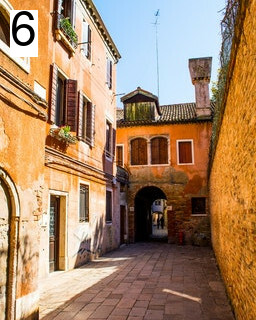
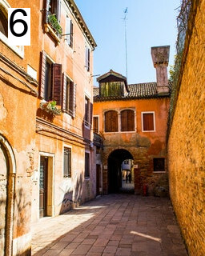
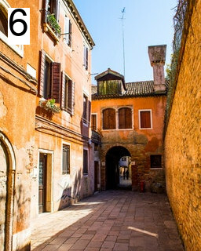

Image Selector
Click a photo to move it between Candidates and Favourites.
Click "Reset List!" to move all photos back to the Candidates and clear the Actions.
Actions:
Reset List!
Candidates:

Favourites:


 
